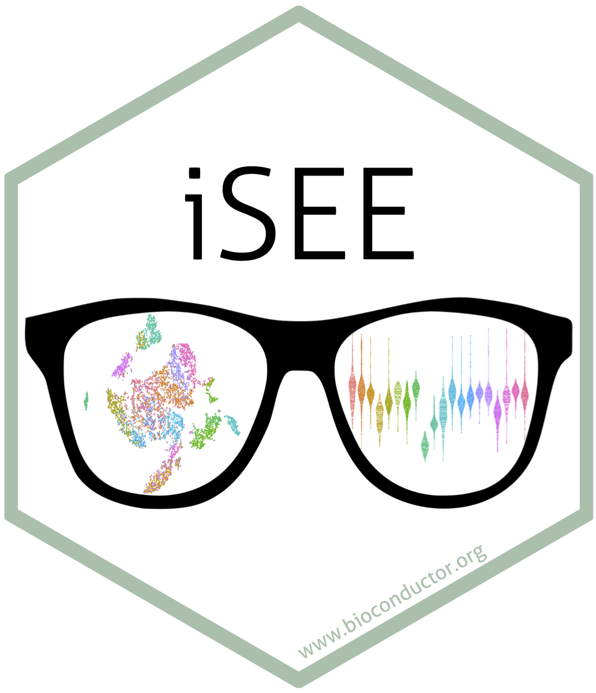

Preparation
Federico Marini1, Kevin Rue-Albrecht2, Charlotte Soneson3, Aaron Lun4, Najla Abassi5
Source:vignettes/d01_preparation.Rmd
d01_preparation.Rmd
Installing and loading the required packages
To run the content presented in this demo, make sure to first run this following chunk in your R session. This will install the workshop package as well as all required dependencies.
install.packages("BiocManager")
BiocManager::install("iSEE/iUSEiSEE",
dependencies = TRUE,
build_vignettes = TRUE)Next, we load the packages that will be used during the demo.
library("SingleCellExperiment")
library("iSEE")
library("TENxPBMCData")
library("iSEEu")
library("iSEEhex")
library("iSEEde")
library("iSEEpathways")
library("iSEEhub")
library("iSEEindex")Alternatively, all of these would be loaded if you load the workshop package itself, i.e.:
You can also clone the GitHub repository (https://github.com/iSEE/iUSEiSEE) locally using
git clone - it makes it easy to open and follow along in
the vignettes.
Load example data
Most of the functionality covered in this workshop will be illustrated by means of a single-cell RNA sequencing dataset that is included in the package. You can load the dataset as follows:
sce <- readRDS(
file = system.file("datasets", "sce_pbmc3k.RDS", package = "iUSEiSEE")
)
sce
#> class: SingleCellExperiment
#> dim: 32738 2643
#> metadata(0):
#> assays(2): counts logcounts
#> rownames(32738): MIR1302-10 FAM138A ... AC002321.2 AC002321.1
#> rowData names(19): ENSEMBL_ID Symbol_TENx ... FDR_cluster11
#> FDR_cluster12
#> colnames(2643): Cell1 Cell2 ... Cell2699 Cell2700
#> colData names(24): Sample Barcode ... labels_ont cell_ontology_labels
#> reducedDimNames(3): PCA TSNE UMAP
#> mainExpName: NULL
#> altExpNames(0):This dataset has already been processed following established principles for single-cell analysis with Bioconductor. To see how the processing was done, consult the script provided with the workflow package.
Session info
Session info
sessionInfo()
#> R version 4.6.1 (2026-06-24)
#> Platform: x86_64-pc-linux-gnu
#> Running under: Ubuntu 24.04.5 LTS
#>
#> Matrix products: default
#> BLAS: /usr/lib/x86_64-linux-gnu/openblas-pthread/libblas.so.3
#> LAPACK: /usr/lib/x86_64-linux-gnu/openblas-pthread/libopenblasp-r0.3.26.so; LAPACK version 3.12.0
#>
#> locale:
#> [1] LC_CTYPE=en_US.UTF-8 LC_NUMERIC=C
#> [3] LC_TIME=en_US.UTF-8 LC_COLLATE=en_US.UTF-8
#> [5] LC_MONETARY=en_US.UTF-8 LC_MESSAGES=en_US.UTF-8
#> [7] LC_PAPER=en_US.UTF-8 LC_NAME=C
#> [9] LC_ADDRESS=C LC_TELEPHONE=C
#> [11] LC_MEASUREMENT=en_US.UTF-8 LC_IDENTIFICATION=C
#>
#> time zone: Etc/UTC
#> tzcode source: system (glibc)
#>
#> attached base packages:
#> [1] stats4 stats graphics grDevices utils datasets methods
#> [8] base
#>
#> other attached packages:
#> [1] iUSEiSEE_1.0.0 iSEEindex_1.10.0
#> [3] iSEEhub_1.14.0 ExperimentHub_3.2.2
#> [5] AnnotationHub_4.2.2 BiocFileCache_3.2.0
#> [7] dbplyr_2.6.0 iSEEpathways_1.10.0
#> [9] iSEEde_1.10.0 iSEEu_1.24.0
#> [11] iSEEhex_1.14.0 TENxPBMCData_1.30.0
#> [13] HDF5Array_1.40.0 h5mread_1.4.1
#> [15] rhdf5_2.56.1 DelayedArray_0.38.2
#> [17] SparseArray_1.12.3 S4Arrays_1.12.1
#> [19] abind_1.4-8 Matrix_1.7-6
#> [21] iSEE_2.24.0 SingleCellExperiment_1.34.0
#> [23] SummarizedExperiment_1.42.0 Biobase_2.72.0
#> [25] GenomicRanges_1.64.0 Seqinfo_1.2.0
#> [27] IRanges_2.46.0 S4Vectors_0.50.3
#> [29] BiocGenerics_0.58.1 generics_0.1.4
#> [31] MatrixGenerics_1.24.0 matrixStats_1.5.0
#> [33] BiocStyle_2.40.0
#>
#> loaded via a namespace (and not attached):
#> [1] RColorBrewer_1.1-3 jsonlite_2.0.0 shape_1.4.6.1
#> [4] magrittr_2.0.5 ggbeeswarm_0.7.3 farver_2.1.2
#> [7] rmarkdown_2.32 GlobalOptions_0.1.4 fs_2.1.0
#> [10] ragg_1.5.2 vctrs_0.7.3 memoise_2.0.1
#> [13] htmltools_0.5.9 curl_8.1.0 BiocNeighbors_2.6.0
#> [16] Rhdf5lib_2.0.0 sass_0.4.10 bslib_0.12.0
#> [19] htmlwidgets_1.6.4 desc_1.4.3 listviewer_4.0.0
#> [22] httr2_1.3.0 cachem_1.1.0 igraph_2.3.4
#> [25] mime_0.13 lifecycle_1.0.5 iterators_1.0.14
#> [28] pkgconfig_2.0.3 rsvd_1.0.6 colourpicker_1.3.0
#> [31] R6_2.6.1 fastmap_1.2.0 shiny_1.14.0
#> [34] clue_0.3-68 digest_0.6.39 colorspace_2.1-4
#> [37] paws.storage_0.11.0 AnnotationDbi_1.74.0 scater_1.40.2
#> [40] DESeq2_1.52.0 irlba_2.4.1 textshaping_1.0.5
#> [43] RSQLite_3.53.3 beachmat_2.28.0 filelock_1.0.3
#> [46] urltools_1.7.3.1 httr_1.4.9 mgcv_1.9-4
#> [49] compiler_4.6.1 bit64_4.8.6 doParallel_1.0.17
#> [52] S7_0.2.2 BiocParallel_1.46.0 viridis_0.6.5
#> [55] DBI_1.3.0 shinyAce_0.4.4 hexbin_1.28.6
#> [58] rappdirs_0.3.4 rjson_0.2.23 tools_4.6.1
#> [61] vipor_0.4.7 otel_0.2.0 beeswarm_0.4.0
#> [64] httpuv_1.6.17 glue_1.8.1 nlme_3.1-171
#> [67] rhdf5filters_1.24.1 promises_1.5.0 grid_4.6.1
#> [70] cluster_2.1.8.3 gtable_0.3.6 ScaledMatrix_1.20.0
#> [73] BiocSingular_1.28.1 XVector_0.52.0 stringr_1.6.0
#> [76] ggrepel_0.9.8 BiocVersion_3.23.1 foreach_1.5.2
#> [79] pillar_1.11.1 limma_3.68.5 later_1.4.8
#> [82] rintrojs_0.3.4 circlize_0.4.18 splines_4.6.1
#> [85] dplyr_1.2.1 lattice_0.23-1 bit_4.6.0
#> [88] paws.common_0.9.0 tidyselect_1.2.1 locfit_1.5-9.12
#> [91] ComplexHeatmap_2.28.0 scuttle_1.22.0 Biostrings_2.80.2
#> [94] miniUI_0.1.2 knitr_1.52 gridExtra_2.3.1
#> [97] edgeR_4.10.7 xfun_0.62 shinydashboard_0.7.3
#> [100] statmod_1.5.2 DT_0.34.0 stringi_1.8.9
#> [103] yaml_2.3.12 shinyWidgets_0.9.1 evaluate_1.0.5
#> [106] codetools_0.2-20 tibble_3.3.1 BiocManager_1.30.27
#> [109] cli_3.6.6 xtable_1.8-8 systemfonts_1.3.2
#> [112] jquerylib_0.1.4 Rcpp_1.1.2 triebeard_0.4.1
#> [115] png_0.1-9 parallel_4.6.1 pkgdown_2.2.1
#> [118] ggplot2_4.0.3 blob_1.3.0 viridisLite_0.4.3
#> [121] scales_1.4.0 crayon_1.5.3 GetoptLong_1.1.1
#> [124] rlang_1.3.0 KEGGREST_1.52.2 shinyjs_2.1.1